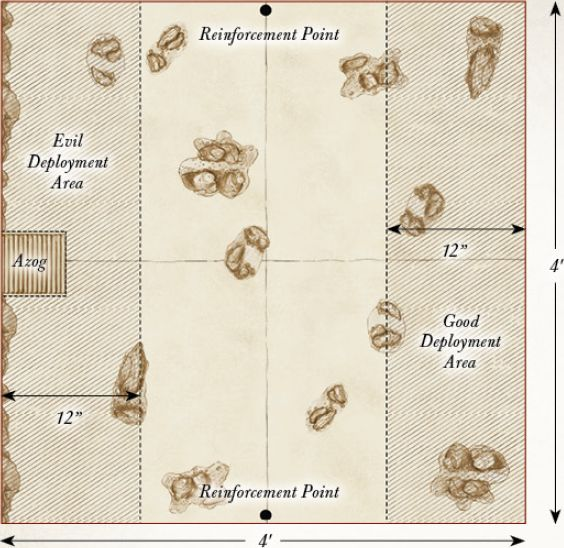
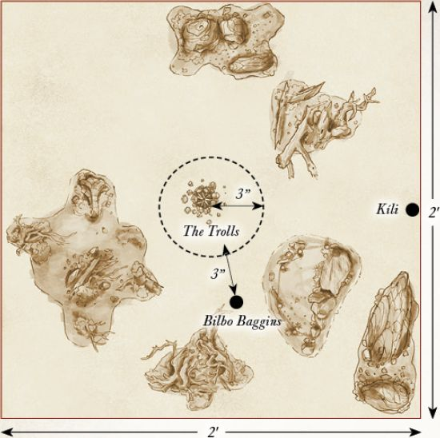
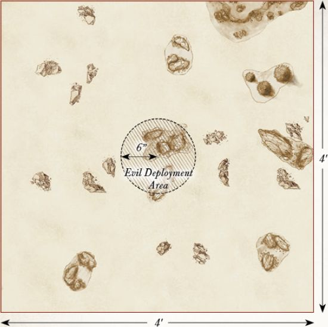
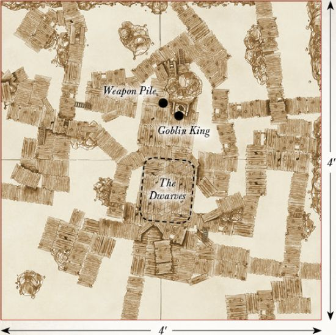
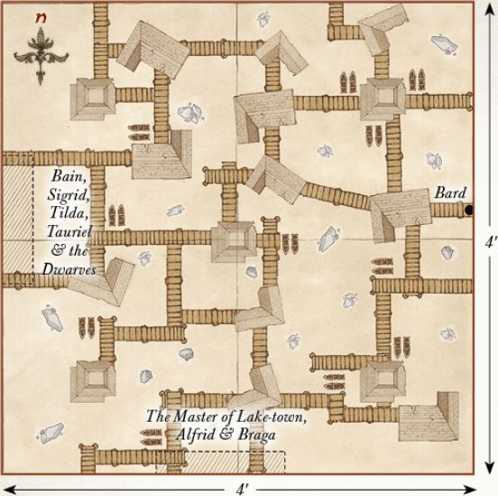
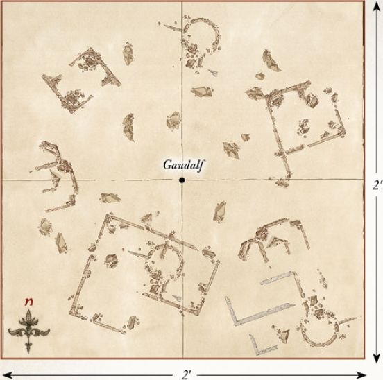
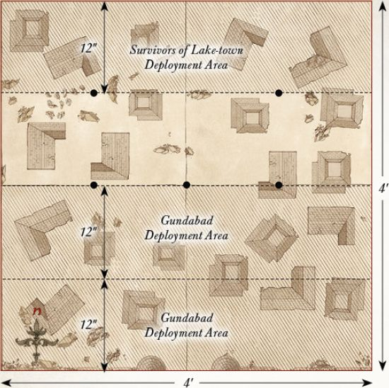

Armies of the Hobbit
DESTRUCTION OF DALE
Since the re-founding of Erebor in the Third Age, Dale had been a prosperous city filled with laughter and trade. Its markets were known far and wide and it had become the centre of all commerce in the north. People would come from across Middle-earth to visit the city's stalls and purchase its wares. However, Dale's time of prosperity and good fortune was not to last.
From the mountains to the north, the sound of creaking trees and rushing wind could be heard; a sound that heralded the destruction of the great city of Men. Smaug, the great Fire-drake of the north, had come to claim the treasures of Erebor and to bring death and ruin to Dale.
Smaug's arrival was terrible to behold, and huge jets of flame flooded the city as the beast made strafing runs across it. Buildings were torched and the once proud market stalls were reduced to naught but ash as Smaug unleashed his fury upon the city.
It was in this moment that Girion, the Lord of Dale, made his last stand. Rallying his warriors to him, Girion commanded every able fighter to stand and take aim at the beast. The Lord of Dale himself manned the Windlance in defence of his city, firing Black Arrow after Black Arrow in an attempt to pierce Smaug's aged and tough hide. If Girion is able to use this Dwarven war machine to pierce the Dragon's scaled hide, then the city of Men may stand a chance of surviving Smaug's fiery wrath...
LAYOUT
This battle takes place within Dale, City of Men. To represent this, you will want a board covered in buildings, roads, pathways and, of course, plenty of towers to fire at the Dragon from. The centre of the playing area should have the highest tower on the board (this needs to be accessible), and the Windlance should be placed on top of this — Dale's only hope at stopping the dreaded Smaug!
STARTING POSITIONS
The Good player deploys their force anywhere on the board, but at least 6" from any board edge and at least 6" from the Windlance. The Evil player does not deploy Smaug; he will move onto the board on the first turn.
OBJECTIVES
This is a fight to the death. The Men of Dale must slay the Dragon, or perish in the attempt. The first side to wipe out their opponent is declared the winner.
SPECIAL RULES
The Coming of Smaug — The Dragon has come from the north and is circling the city, ready to unleash his wrath upon the people of Dale.
At the end of the Evil player's first Move phase, Smaug will arrive. The Evil player rolls a D6. On a 1-3, the Good player may decide which board edge Smaug arrives from. On a 4+, the Evil player may choose instead.
Not Yet Loosened — The Lord of Dale is yet to leave his mark upon the great Fire-drake.
Smaug is not subject to his Missing Scale rule in this Scenario.
The Lord of Dale — This is the moment in history where Girion will make his last stand, and the outcome will form his legacy for years to come.
Girion automatically passes all Courage tests for this Scenario. Additionally, Girion may choose to re-roll a single D6 in each turn.
PARTICIPANTS
GOOD
Girion, Lord of Dale; 2 Captains of Dale;
30 Warriors of Dale.
EVIL
Smaug.

BATTLE OF AZANULBIZAR
Following the loss of The Lonely Mountain to Smaug, the Dwarves of Erebor set out to reclaim the former Dwarven kingdom of Khazad-dûm. In the years since the awakening of Durin's Bane, the once proud ancestral home of the Dwarves had become overrun and defiled by Orcs and other vile creatures. No more was Khazad-dûm a place of Dwarven industry and the sound of harps; instead, it had descended into a realm of darkness and cruelty, becoming known instead as the Black Pit of Moria.
As Thrór leads the Dwarves of Erebor towards their rightful home, the Pale Orc, Azog, the leader of the Orc armies, strides forth from the Dimrill Gate as tides of Orcs pour from the bowels of the mountain with the sole purpose of putting an end to the Dwarven advance.
Azanulbizar will now be the site of a bloody battle between Dwarves and Orcs. Countless casualties will be suffered on both sides as they fight for control of the Dimrill Gate. If the Dwarves fail to reclaim the realm of Khazad-dûm, then Azog will put an untimely end to the line of Durin and the Dwarves will never again lay claim to the mountain...
LAYOUT
This battle takes place upon the slopes of the Dimrill Dale, a rocky battlefield of scree-strewn slopes and clumps of wiry foliage. The western board edge represents the thick rock walls of Khazad-dûm, and in the centre are the gates to the formerly great Dwarven realm.
STARTING POSITIONS
The Good player deploys their army anywhere within 12" of the eastern board edge. The Evil player then deploys their army anywhere within 12" of the western board edge, with Azog within 3" of the Dimrill Gate.
OBJECTIVES
The Dwarves are fighting to reclaim Moria and rid the lands of the Orc's leader, Azog. However, Azog's mission is far simpler — to end the line of Durin. The Good player wins if, at the end of any turn, Azog has been slain and there are at least twelve Good models within 6" of the Dimrill Gate. The Evil player wins immediately if all of the Good Heroes have been slain.
SPECIAL RULES
Long live the King! — With Thrór alive, his ancestors do not yet need to avenge his death.
Whilst Thrór is alive and on the battlefield, Thráin receives no benefit from his Blood Feud special rule. Additionally, Thrór cannot benefit from the Arkenstone in this Scenario.
There was one I could follow — In the wake of his grandfather's death, and his father's presumed fate, Thorin rallies the Dwarves that remain for the final charge towards their enemies.
If both Thrór and Thráin have been slain, and Young Thorin Oakenshield wins a Duel roll, then all Dwarf models on the board count as if they are in range of a banner until the end of the turn.
Hordes without End — The armies under Azog's command are impossibly vast, flocking to battle to spill Dwarvish blood.
Whenever an Evil Warrior model is slain, place it to one side. At the end of each subsequent Evil Move phase, roll a D6 for each model set aside in this manner. On a 3+, it may enter play, via the rules for Reinforcements, from the Dimrill Gate or either of the two points marked Reinforcements. These Reinforcements stop immediately if Azog is slain. The Evil force cannot be Broken in this Scenario.
PARTICIPANTS
GOOD
Thrór; Thráin; Young Thorin Oakenshield; Young Balin the Dwarf; Young Dwalin the Dwarf; 36 Warriors of Erebor; 24 Grim Hammers.
EVIL
Azog; The Keeper of the Dungeons; 3 Gundabad Orc Captains; 48 Gundabad Orcs.

ROAST MUTTON
Having set off from The Shire to begin their quest to The Lonely Mountain, the company of Thorin Oakenshield has stopped in the region of Trollshaws to make camp and take rest. However, unbeknownst to the Dwarves, some of the ponies that have carried them have gone missing. When Bilbo, Kili and Fili search for their missing steeds, they happen upon the camp of three monstrous Trolls who have captured their ponies with the intent of feasting on them.
In an effort to rescue the distressed creatures, Bilbo sneaks into the Trolls' camp to set them free. Yet as he does so, he is unwittingly grabbed by a cold-filled Troll who uses him as an impromptu handkerchief.
Bilbo suddenly finds himself in the clutches of the Three Trolls, who have now set about deciding how best to cook and eat him, and any other burrahobbits that may be lurking nearby.
Yet as the Trolls are about to seal Bilbo's fate, Kíli bursts through the foliage, catching them off-guard and commanding them to release their prisoner. Following Kíli, the rest of the company throw themselves into a swirling melee in order to rescue Bilbo from a miserable death.
Can the Dwarves survive long enough to see the sun rise and the Trolls turned to stone, or will the company of Thorin Oakenshield become naught more than a tasty meal for them?
LAYOUT
This Scenario takes place in the Trolls' camp in a clearing in the Trollshaws. In the centre of the board, place the Trolls' Campfire. Around the edge of the board there should be a few trees and pieces of woodland terrain representing the surrounding forest.
STARTING POSITIONS
The Evil player places the Three Trolls within 3" of the Campfire. The Good player then places Bilbo within 3" of Bill and places Kíli touching the centre of any board edge. The rest of Thorin's Company will be available later.
OBJECTIVES
The Dwarves are trying to rescue Bilbo by slaying the Trolls, whilst the Trolls are after a good meal that won't taste like chicken. Thorin's Company wins if they can slay all of the Trolls before daybreak. The Trolls win if all members of Thorin's Company are slain or stuffed into sacks before the sun comes up. The game is a draw if, when the sun rises, all of Thorin's Company are not dead or in a sack, or if the Trolls are not dead. Additionally, if Bilbo is slain, the best result the Good player can achieve is a draw.
SPECIAL RULES
"The dawn will take you all!" — At the end of the sixth turn, the sun will rise. However, Gandalf will still need to sunder the rocks to allow light into the clearing to save the company.
At the start of turn 7, and each turn thereafter, roll a D6. On a 4+, Gandalf has broken the rocks surrounding the clearing, allowing sunlight to flood in and turn the Trolls to stone.
"I said drop him!" — The Dwarves have rushed to the aid of their burglar, and must now fight to rescue him.
At the end of the Good player's first Move phase, roll a D6 for each member of Thorin's Company not on the board. On a 3+, they enter the board from the point that Kíli was deployed. Any Dwarves that do not arrive will enter from the same point at the end of the Good player's second Move phase.
A Burrahobbit? — The Trolls are somewhat confused by Bilbo's sudden appearance, and would much rather find more to make a pie than simply scoff the Hobbit.
The Trolls may not make Strikes against Bilbo until the start of the third turn, or until Bilbo charges one of them.
PARTICIPANTS
GOOD
Thorin Oakenshield; Kíli the Dwarf; Fíli the Dwarf; Balin the Dwarf; Dwalin the Dwarf; Bifur the Dwarf; Bofur the Dwarf; Bombur the Dwarf; Ori the Dwarf; Nori the Dwarf; Dori the Dwarf; Óin the Dwarf; Glóin the Dwarf; Bilbo Baggins. As they have not yet ventured into the Troll's hoard, Thorin and Bilbo do not have Orcrist or Sting respectively. Bilbo also has not yet found The Ring.
EVIL
Bill the Troll; Bert the Troll; Tom the Troll.

HUNTING PARTY
After being hounded by Azog's Hunters across the plains and hills that make up the areas surrounding Rivendell, the company of Thorin Oakenshield, led there by Gandalf the Grey, has finally managed to escape, finding safety within the rocks that hide the entrance to the Last Homely House. Although Radagast the Brown has done his best to lead the ravenous Wargs astray, some have still managed to catch the Dwarves' scent and discover their whereabouts.
Yet before Yazneg's pack can pursue their prey into the secret passageway, a flurry of deadly Elven arrows signals the arrival of the knights of
Rivendell, led by Lord Elrond. For having seen the Orc pack patrolling the borders of their land, the elite Elven warriors set about engaging their foe to drive them away from Rivendell.
The Orcs under Yazneg's command are now embroiled in a skirmish with the Elves, a fight they have no real hope of winning. Yazneg must endeavour to make his way back to his master to bring a report of the situation with the Dwarves to the Pale Orc's attention, whilst the Elves are determined to rid their lands of evil beings for good.
LAYOUT
This Scenario takes place upon the rocky plains near the Hidden Valley. The board should be scattered with large rocks, rock piles and hills. There should be a rock pile that houses the entrance to the Hidden Valley in the centre of the board.
STARTING POSITIONS
The Evil player deploys their models anywhere within 6" of the centre of the board. The Good player then deploys their models anywhere more than 10" away from any Evil model.
OBJECTIVES
Having noticed the Orcs on their borders, Elrond has led the Knights of Rivendell against them in an attempt to drive them from the Elves' land. With the pursuit of his prey having failed, Yazneg must now escape to bring a report of the situation to his master; although the news of failure may not be something that the Pale Orc wishes to hear...
The game lasts for ten turns. The Good player wins if they can slay 50% of the Evil force. The Evil player wins if Yazneg manages to escape the board via any board edge. If both players (or neither) manage to achieve their objective, the game is a draw.
SPECIAL RULES
Elven Assault — With the Orcs distracted by their pursuit of the Dwarves, the Elves are able to take them completely by surprise.
The Good player has Priority in the first two turns of this Scenario.
PARTICIPANTS
GOOD:
Elrond with heavy armour and horse; 12 Rivendell Knights with shield.
EVIL:
Yazneg on Fell Warg; 12 Hunter Orcs on Fell Warg; 12 Fell Wargs.

ESCAPE FROM GOBLIN-TOWN
Following their stay within the safety of the Last
Homely House, the Dwarves of Thorin's Company set off to traverse the winding and treacherous paths of The Misty Mountains. The paths taken prove to be difficult, as the elements seem to be against them. Rain lashes down upon their faces, and thunder and lightning play havoc with their senses. Even as they walk the mountain paths, huge stone giants wage war with each other, utterly oblivious to the Dwarves, and place the company in dire peril.
It is decided that the company must stop until the weather improves. Finding a seemingly empty cave, a rarity in the mountains, the company settles down to rest. Yet during their slumber, the Dwarves are awoken by a series of loud cracks as the floor gives way and they plummet into the clutches of the vile denizens of Goblin-town.
Captured and unable to break free, the Dwarves of Thorin's Company are brought before the huge blubbery mass of the Goblin King, who taunts them before revealing that the Pale Orc's defiling days are far from done, as Thorin believed, and that Azog has placed a large price upon the head of the one who cut off his arm. Yet even as hope wanes for the Dwarves, help is at hand as the Grey Wizard makes his way to aid them in their escape.
LAYOUT
This Scenario takes place upon the rickety walkways that make up the vile dwelling of Goblin-town, deep within The Misty Mountains. The board should be covered with various walkways of all different shapes and sizes. There should be a large platform near the centre of the board where the Goblin King's throne sits and the Dwarves will start — the weapons pile will be located next to the Goblin King's throne. It is important to have multiple walkways on each board edge that leave the board in all directions to give Thorin's Company a selection of ways to escape Goblin-town.
STARTING POSITIONS
The Good player deploys the Dwarves anywhere within the marked area on the map. The Evil player then deploys Grinnah, the Goblin Scribe, the Goblin Captain and the Goblin Warriors anywhere on the board, at least 3" away from any Dwarf. The Goblin King is deployed touching his throne. Gandalf is kept aside for later in the game.
OBJECTIVES
The company of Thorin Oakenshield must escape the clutches of the denizens of Goblin-town if they are to hope to continue on their quest towards Erebor. The Goblin King has heard of the price put upon Thorin's head by the Pale Orc, and must prevent the Dwarves from escaping in order to claim his reward.
At the start of the game, the Evil player nominates any board edge; this is the edge that Thorin's Company must escape from. The Good player wins if at least eight members of Thorin's Company escape the chosen board edge, whilst the Evil player wins if they can prevent this.
SPECIAL RULES
Take up arms — Upon being presented to the Goblin King, the Dwarves have been stripped of their weapons, which now lay to one side of the Goblin King's throne.
The Dwarves all start the game unarmed. Any Dwarf that moves into base contact with the weapons pile at any point in their Move phase may pick up their weapons — at which point they are no longer considered to be unarmed.
A Wizard is never late — Gandalf has followed the Dwarves into the depths of Goblin-town in order to save them from a terrible fate.
At the end of the Good player's second Move phase, Gandalf will arrive; roll a D6. On a 1-3, the Evil player chooses any board edge for Gandalf to enter play from. On a 4+, the Good player may choose.
Kill them all! — Under the command of their king, countless Goblins flock to battle to slay the Dwarves.
At the end of each of the Evil player's Move phase, the Evil player may move up to D6 previously slain Goblin Warriors onto the board from any point on any board edge chosen by the Evil player.
"I Know that Sword!" — Horrified at the sight of the Goblin Cleaver, the Goblin King is slow to react to the Dwarves' sudden outbreak, rendering him temporarily helpless.
The Goblin King may not move during the first turn of the game.
PARTICIPANTS
GOOD
Thorin Oakenshield with Orcrist and Oakenshield; Kíli the Dwarf; Fíli the Dwarf; Balin the Dwarf; Dwalin the Dwarf; Bifur the Dwarf; Bofur the Dwarf; Bombur the Dwarf; Ori the Dwarf; Nori the Dwarf; Dori the Dwarf; Óin the Dwarf; Glóin the Dwarf; Gandalf the Grey.
EVIL
The Goblin King; Grinnah; The Goblin Scribe; Goblin Captain; 36 Goblin Warriors.

OUT OF THE FRYING PAN, AND INTO THE FIRE
Having escaped the Goblin tunnels of The Misty Mountains and the ordeals they have faced within, the Dwarves of Thorin's Company stop within the surrounding forests to regroup and rest. Yet no sooner have they managed to catch their breath, the sound of baying Wargs can be heard across the air, signalling that the company is by no means safe yet.
Hounded by Wargs and Orcs, the company of Thorin Oakenshield sprints for safety from the howling beasts that thirst for their blood. Yet as the company tries to escape, a sheer drop halts their path, and now the only way to go is up the trees that line the edge of the cliff face. Scrambling up the tree trunks with only seconds to spare, the Dwarves are now trapped in the boughs with their hunters looking towards them.
From his tree, Thorin sees what he had dared not believe. The Pale Orc, Azog, alive and still drawing breath. Filled with rage, Thorin clambers down from the safety of the branches and prepares to fight against his grandfather's murderer. With Thorin Oakenshield consumed with thoughts of revenge, Bilbo follows him in an attempt to save the heir of Erebor from a grizzly fate; whilst within the high branches, Gandalf sends a plea of help to some unlikely allies...
LAYOUT
This Scenario is played in the woodland around The Misty Mountains, where Azog and his hunters corner the company of Thorin Oakenshield. A cliff runs along the eastern board edge, trapping the Dwarves between a sheer drop and their hunters. Several trees should be dotted along the eastern board edge, whilst the rest of the board is dotted with rocky outcrops and bushes.
STARTING POSITIONS
The Evil player deploys all of their models within 6" of the western board edge. The Good player then deploys Thorin in base contact with the tree nearest to the centre of the western board edge (see map). All other Good models will be available later in the game.
OBJECTIVES
The Eagles must rescue all of the Dwarves before Azog is able to slay Thorin. The Orcs are simply trying to kill Thorin and prevent the rest of the Dwarves from escaping.
The Good player wins if the Eagles safely carry all the markers, Thorin and Bilbo off any board edge. The Evil player wins if they can prevent this from happening.
SPECIAL RULES
Rescuing Dwarves — The Dwarves are in need of rescue, a feat only capable by the Great Eagles.
Before the game starts, players take it in turn to nominate five trees, starting with the Good player. These are the trees where the Dwarves and Bilbo are hiding; place a marker beside each tree to remind you. At the end of the Good Move phase, any Eagle not involved in a fight (including Gwaihir) may pick up a marker it is in base contact with as if it were a Light Object. Thorin and Bilbo may be carried in the same way. If an Eagle leaves the board whilst carrying Dwarves, then those Dwarves are considered rescued.
The Eagles are Coming! — From atop their lofty perch, the Eagles have noticed the company's peril and now fly to the rescue.
The Eagles enter the board from the northern or southern board edge at the end of the Good player's second Move phase as Reinforcements. An Eagle that leaves the board carrying Dwarves, or that was previously slain, may re-enter the board from either the northern or southern board edge as Reinforcements. An Eagle carrying Dwarves may not use Brutal Power Attacks. If an Eagle is slain whilst carrying a marker, then the marker is lost and the Dwarves are slain.
Thorin's Wrath — Filled with rage at the sight of the Pale Orc, Thorin races towards his foe.
During each Good Move phase, Thorin must move as close as possible to Azog, charging him if he can.
Bilbo — Seeing Thorin sealing his own fate, Bilbo leaves the relative safety of the trees in order to help him.
At the start of any Fight phase, the Good player may place Bilbo in base contact with any model involved in a fight with Thorin. If Bilbo enters this way, he must also be rescued (otherwise, he counts as being included with one of the markers).
PARTICIPANTS
GOOD
Thorin Oakenshield with Orcrist and Oakenshield; Bilbo Baggins with Sting; Gwaihir; 4 Great Eagles.
EVIL
Azog on White Warg; Fimbul the Hunter on Fell Warg; 12 Hunter Orcs on Fell Warg; 12 Fell Wargs.

FLIES AND SPIDERS
After stopping at the house of Beorn, and the departure of Gandalf at the edge of the forest, the company of Thorin Oakenshield venture into the gloom of Mirkwood, warned to keep to the path. Yet as the Dwarves traverse the twisting and overgrown trails, they become confused and lost as the powers that lay upon the forest infect their minds and betray their wits.
Soon, the Dwarves of Thorin's Company find themselves caught amongst the huge sticky webs of the vile beings that dwell within the forest's boughs, and at the mercy of their hunger. Seeing that his companions are in dire trouble, Bilbo slips on the magic ring he found within the Goblin tunnels and cuts the bound Dwarves free from their sticky prisons.
Being free does not mean being out of danger, however, and the spiders are not best pleased that their feast is now putting up more of a fight than they were hoping for. The Dwarves must fend off their arachnid captors, or become but another tasty morsel and fail in their quest. Yet, even as the Dwarves fight for their lives, help is not far away...
LAYOUT
This Scenario is set within the depths of Mirkwood, and as such the board should be covered in trees and forest terrain, with a few small clearings dotted around. The centre 6" of the board should also be clear of trees.
STARTING POSITIONS
Thorin's Company are deployed within the central clearing. The spiders are deployed anywhere at least 10" from the Dwarves. The Elves are kept aside for later.
OBJECTIVES
The Dwarves are fighting to survive against the bloated and ravenous spiders of Mirkwood. The spiders are simply after a tasty meal, and the Dwarves seem to be a fitting feast!
The game lasts for twelve turns. If at the end of twelve turns there are still ten or more members of Thorin's Company left alive, the Good player wins. The Evil player wins if they can slay at least six members of the company. Any other result is a draw.
SPECIAL RULES
Haze of Mirkwood — The thick mysterious air of the forest has seeped into the minds of the Dwarves, rendering them in a groggy state.
At the start of each of the Dwarves' move, roll a D6. On a 4+, that Dwarf may not move that turn, may only roll a single dice for a Duel roll and may not make Strikes.
The Rangers — Upon hearing the sound of battle, Legolas, Tauriel and the Rangers of Mirkwood rush to the Dwarves' aid.
At the end of the Good player's fourth Move phase, they may move Legolas, Tauriel and the Mirkwood Rangers onto the board as Reinforcements from any board edge.
The Spiders' Nest — The Dwarves are deep within the nesting area of the Mirkwood Spiders, and more constantly scuttle to an apparently easy meal.
Any Mirkwood Spiders that are slain are kept to one side. At the start of each turn, before Priority is rolled, the Evil player may place any previously slain Mirkwood Spiders on the board at least 10" away from any Good models. These Spiders may act as normal.
PARTICIPANTS
GOOD
Thorin Oakenshield with Orcrist and Oakenshield; Kíli the Dwarf; Fíli the Dwarf; Balin the Dwarf; Dwalin the Dwarf; Bifur the Dwarf; Bofur the Dwarf; Bombur the Dwarf; Ori the Dwarf; Nori the Dwarf; Dori the Dwarf; Óin the Dwarf; Glóin the Dwarf; Legolas Greenleaf; Tauriel; 10 Mirkwood Rangers.
EVIL
10 Mirkwood Spiders.

FIRE AND WATER
Havingbeen awoken by Bilbo during the Hobbit's search for the Arkenstone, Smaug engages the intruder to his realm in a battle of wits. Yet for all of Bilbo's pleasantries and attem pts to deflect the Dragon's questions, Smaug guesses the burglar's intentions. Filled with wrath at the coming of the usurper, Thorin Oakenshield, Smaug gives chase to Bilbo and the Dwarves of Erebor, during which he will nearly perish under a lake of liquid gold brought about by Thorin's Company.
Filled with rage from his encounter with the Dwarves in Erebor and their attempt on his life, Smaug promises revenge upon the fishermen of Lake- town for the aid they provided to Thorin.
His wrath rains down upon Esgaroth like a murderous storm, setting huge swathes of the settlement alight with tremendous strafing runs and gouts of flame. The only hope for the people of Lake-town is for the Dragon to be slain, an act much easier said than done.
Yet all is not lost. Having escaped imprisonment at the hands of the Master of Lake-town, Bard grabs his great bow and sets out to finish what his ancestor Girion started many years before, lest Lake-town be razed to the ground and be consumed by fire and smoke — the mark left upon the Dragon by the Lord of Dale may yet prove to be Smaug's undoing.
LAYOUT
This Scenario is played across the wooden jetties and walkways of Esgaroth. There should be five towers on the board; one in the centre, with the other four arranged as shown on the map. Plenty of other buildings and houses should be dotted around Lake-town, providing lots of hiding places from Smaug's flames.
STARTING POSITIONS
The Good player deploys Bard touching the eastern board edge. They then deploy Bain, Sigrid, Tilda, Tauriel, Kíli, Fíli, Bofur and Óin touching the western board edge. The Master of Lake-town, Alfrid and Braga are deployed touching the southern board edge. The Lake-town Guard are deployed anywhere on the board.
OBJECTIVES
Smaug has come to wreak death and destruction on the fishing settlement of Lake-town, and will not rest until it is naught but ash. The only way to stop the mighty beast is to slay him. This is a fight to the death; the first side to wipe out their opponent's force is the winner.
SPECIAL RULES
The Black Arrow — Bain has recovered the Black Arrow from its hiding place, and must now deliver it to his father, so that Bard can slay the beast.
Bain starts the game in possession of the Black Arrow, which is a Light Object. If both Bard and a model carrying the Black Arrow are both in the same tower, Bard may fire the Black Arrow as if he were firing the Windlance, and still benefits from the Black Arrow special rule. Bard may still fire the Black Arrow even if he moved this turn.
A Dragon's Wrath — Smaug is focused only on destroying Lake-town, and pays little attention to those running for their lives on its walkways.
All Good Heroes gain the Stalk Unseen special rule. Any Hero in one of the towers will lose this special rule whilst they remain in the tower.
A Touch of Destiny — This is Bard's defining moment; the moment where he will either go down in history as the Dragon Slayer, or perish along with his loved ones.
Bard gains the Mighty Hero special rule. Additionally, Bard is not affected by Sigrid & Tilda's Something to Fight For special rule.
The Waters of the Long Lake — Esgaroth sits upon the Long Lake, and the waters could help douse the flames that now engulf Lake-town.
Any model that has been Set Ablaze that moves into the waters of the Long Lake will immediately extinguish the flames.
The Defence of Lake-town — Such is Smaug's tremendous bulk that he can easily be targeted by bowfire — not that arrows will have much effect against the Dragon's thick hide.
Good models may shoot at Smaug even if he is Engaged in combat, with no risk of hitting friendly models. Any model that shoots at Smaug in this way suffers a -1 penalty when rolling To Hit — this is cumulative with other such penalties, such as moving and shooting.
PARTICIPANTS
GOOD
Bard the Bowman; Bain, Son of Bard; Sigrid & Tilda; Tauriel; Kíli the Dwarf; Fíli the Dwarf; Bofur the Dwarf; Óin the Dwarf; the Master of Lake-town; Alfrid the Councillor; Braga, Captain of the Guard and 24 Lake-town Guard: 8 with sword, 8 with spear and 8 with bow.
EVIL
Smaug.

THE FALL OF THE NECROMANCER
Having venturedinto the dark, ruined walls of Dol Guldur, Gandalf has uncovered the truth as to what dwells within. For lurking deep inside the seemingly forgotten fortress is none other than Sauron, the enemy of the Free Peoples of Middle-earth. Upon confronting this terrible foe, Gandalf has been captured and is now at the mercy of the monstrous Keeper of the Dungeons, who relishes the opportunity to torture and maim the Grey Wizard.
Yet help is at hand; for Radagast the Brown has been true to his word and brought news of Gandalf's predicament to the Lady Galadriel — perhaps the one being in Middle-earth that Sauron fears. The Lady of Light ventures to Dol Guldur to deliver Gandalf from the terrible fate that may await him, and she does not come alone.
The remaining members of the White Council also join their lady in the fight against this ancient foe now returned. The White Wizard Saruman uses his mastery of magical power and unrivalled knowledge of the enemy to combat the servants of the Dark Lord.
Elrond, the master of Rivendell, draws his blade and heads into the swirling melee of steel and ghostly weaponry; his sword clashing with those of the enemy in a desperate battle of speed and martial prowess.
Even the absent-minded Radagast assists the council by providing Gandalf with a means to escape on his rabbit-led sleigh. However, it will take every ounce of power and skill this collection of mighty beings possess to defeat the darkness and stop Sauron from returning to Middle-earth...
LAYOUT
The board represents one of the many courtyards within Dol Guldur. Broken rubble, partly-fallen statues and stairways should be scattered across the battlefield.
STARTING POSITIONS
The Good player deploys Gandalf in the centre of the board. The Evil player then deploys the Keeper of the Dungeons within 3" of Gandalf. The Good player then deploys Galadriel touching any board edge. All other models are kept to one side for later in the game.
OBJECTIVES
The White Council are trying to save Gandalf from the clutches of the Necromancer, whilst also banishing Sauron from Dol Guldur. Sauron's mission is simple, namely to slay the White Council and thus remove the major threat to his rise to power. The Good player wins immediately if Gandalf is rescued by having him move off of any board edge and the Necromancer has been banished, whilst the Evil player wins if they can slay any three members of the White Council. Any other result is a draw.
SPECIAL RULES
A Wizard Lays Dying — Gandalf lays upon the stone floor of Dol Guldur, having been battered by the magics of the Necromancer and tortured at the hands of the Keeper of the Dungeons.
Gandalf starts the game with no Might or Will, no Staff of Power, and under the effects of the Paralyse Magical Power. Friendly models may carry Gandalf, in which case he is a Heavy Object.
"I will Destroy You" — In order to save Gandalf from the barbaric Keeper of the Dungeons, Galadriel can unleash her devastating power upon the Orc.
Galadriel can target the Keeper of the Dungeons with the Banish Magical Power as if it were a Spirit model.
"Nine for Mortal Men, doomed to die..." — Summoned by the Necromancer, the Nazgûl of Dol Guldur have been tasked with slaying the members of the White Council.
As soon as the Keeper of the Dungeons is slain, place all nine Nazgûl of Dol Guldur on the board at least 6" away from any Good model.
"Are you in need of assistance?" — Galadriel has not come to rescue Gandalf alone; Saruman and Elrond have also come to Dol Guldur.
The Good player may choose to have Saruman and Elrond enter the board at the end of any Good Move phase after the first turn. In the turn they arrive, Saruman and Elrond may use up to two Magical Powers. These may even be the same Magical Power twice if you prefer.
Radagast to the Rescue — Upon his sleigh, Radagast is tasked with carrying Gandalf to safety.
The Good player may choose to have Radagast arrive at the end of any Good Move phase after Saruman and Elrond have arrived. Gandalf may be loaded onto Radagast's Sleigh, at which point he counts as a passenger.
Sauron's Return — Though it was believed that he was unable to return, Sauron has in fact been growing in power in the depths of Dol Guldur, and he is now ready to reveal himself.
At the end of the ninth game turn, the Evil player places the Necromancer touching any board edge.
PARTICIPANTS
GOOD
Gandalf the Grey; Saruman the White; Radagast the Brown on Sleigh; Galadriel, Lady of Light and Elrond, Master of Rivendell.
EVIL
The Necromancer; All 9 Nazgûl of Dol Guldur and the Keeper of the Dungeons.

BATTLE OF THE FIVE ARMIES
The Dragon, Smaug, lies dead, slain by the Black Arrow fired by Bard in Esgaroth. Yet ill temperament and conflict still lies ahead. Consumed by the Dragon sickness that lies upon the vast treasure hoard of Erebor, Thorin refuses to honour his oath to share the wealth with the people of Lake- town; instead opting to send for his cousin, Dain, and an army of Dwarves from the Iron Hills.
Walled into his kingdom, Thorin is approached once more by Bard, Thranduil anda glittering host of Mirkwood Elves who, thanks to Bilbo, now possess the Arkenstone. Planning to use the jewel of Thorin's house asa bargaining piece, Thorin is once more confronted by Bard in an attempt to make the belligerent Dwarf honour his word. Yet Thorin will not cave, believing this to be a ruse made by his perceived enemies. Standing defiantly atop the gates of Erebor, Thorin hears the sound of iron-shod boots marching in unison towards his gates.
The arrival of Dain Ironfoot only exacerbates the situation, provoking Thranduil and starting a battle between Elves and Dwarves that sees casualties on both sides. As Dwarves and Elves clash blade with axe, the armies of Azog burst forth from the ground, uniting these unlikely allies together in order to prevent the mountain from falling into the hands of the enemy. As Dwarves, Elves and Men set aside their differences in the face of the armies of the Pale Orc, the battle for the mountain begins...
LAYOUT
The board represents the plains before Erebor — there should be a few scattered rocks and scrubland dotted around (not too much as there are a lot of models in this Scenario!). The eastern board edge represents the walls of Erebor, the centre of which marks the gates of Erebor.
STARTING POSITIONS
The Evil player deploys the Signal Tower as shown on the map, with Azog and all seven of his Lieutenants within 3" of it. They then deploy the Gundabad Orc Captains, Gundabad Orcs, Gundabad Trolls, Ogres and Catapult Troll between 12" and 36" of the western board edge. The Good player then deploys Dain and the Iron Hills Dwarves in the eastern half of the board within 12" of the centre of the board. They then deploy Thranduil and the Mirkwood Elves between 12" and 24" of the eastern board edge. Finally, the Good player deploys the members of Thorin's Company within 6" of the gates of Erebor. All other models are kept to one side.
OBJECTIVES
The game lasts until one force has been reduced to 25% of its starting numbers. There are five main objectives that both sides are trying to achieve. Whichever side achieves the most objectives is the winner:
-
Azog: If Azog has been slain at the end of the battle, the Good player achieves this objective. If Azog is alive at the end of the battle, the Evil player achieves this objective.
-
Thorin: If Thorin has been slain at the end of the battle, the Evil player achieves this objective. If Thorin is alive at the end of the battle, the Good player achieves this objective.
-
Thranduil: If Thranduil moves off the western board edge to reach Dale, the Good player achieves this objective. If not, the Evil player achieves this objective.
-
The Battlefield: At the end of the game, whichever force has the most models within 6" of the centre of the board achieves this objective.
-
Strength of Number: Whichever force reduces their opponent to 25% of their starting number first achieves this objective.
SPECIAL RULES
Forth from Gundabad — Whilst the Battle of the Five Armies has been raging, Bolg has been marching an army from Gundabad to join the melee.
At the end of the Evil player's fifth Move phase, the Evil player moves Bolg, the Gundabad Berserkers, the Goblin Mercenaries and the War Bats onto the board from any point on the northern board edge that is within 36" of the western board edge.
The Eagles are Coming — Called to battle by Radagast, the allies of the Free Peoples, both bird and beast, join the battle.
At the end of the Good player's seventh Move phase, the Good player moves Radagast, Gwaihir and the Great Eagles onto the board from any point on the northern board edge.
Beorn — Ferried to battle upon the back of his avian allies, Beorn thrusts himself into the battle with unrivalled fury.
Beorn enters the board as a passenger on the back of any of the Great Eagles (not Gwaihir or the one carrying Radagast) and follows the normal rules for passengers, with the exception that Beorn may both Move and Charge on the turn he dismounts. Beorn may not transform into a bear whilst mounted upon this eagle, but will automatically transform as soon as he dismounts.
PARTICIPANTS
GOOD
Erebor Reclaimed
Thorin Oakenshield, King Under the Mountain; Kíli the Dwarf, Champion of Erebor; Fíli the Dwarf, Champion of Erebor; Balin the Dwarf, Champion of Erebor; Dwalin the Dwarf, Champion of Erebor; Bifur the Dwarf, Champion of Erebor; Bofur the Dwarf, Champion of Erebor; Bombur the Dwarf, Champion of Erebor; Ori the Dwarf, Champion of Erebor; Nori the Dwarf, Champion of Erebor; Dori the Dwarf, Champion of Erebor; Óin the Dwarf, Champion of Erebor; Glóin the Dwarf, Champion of Erebor.
The Iron Hills
Dáin Ironfoot, Lord of the Iron Hills on war boar; Iron Hills Captain; Iron Hills Captain with Mattock; 36 Iron Hills Dwarves: 12 with spear, 12 with mattock, 12 with crossbow; Iron Hills Chariot.
Halls of Thranduil
Thranduil, King of the Woodland Realm on elk; 2 Mirkwood Elf Captains; 36 Mirkwood Elves; 12 with shield; 12 with Elven-made glaive; 12 with Elf bow.
Radagast's Alliance
Beorn; Radagast the Brown on Great Eagle; Gwaihir; 4 Great Eagles.
EVIL
Azog's Legion
Azog with heavy armour, stone flail and Signal Tower; Bolg; 5 Gundabad Orc Captains with shield; 2 Goblin Mercenary Captains; 60 Gundabad Orcs: 30 with shield, 30 with spear; 2 Gundabad Trolls with crushing club; 2 Gundabad Trolls with scythe gauntlets; Troll Brute; 6 Gundabad Ogres; 24 Gundabad Berserkers; 24 Goblin Mercenaries; 6 War Bats; Catapult Troll.

BATTLE FOR DALE
On the plains of Erebor, the Battle of the Five Armies is in full swing. The heavily-armoured Dwarves of the Iron Hills are fighting side-by-side with the glittering host of Mirkwood in an attempt to force back the vast legions of the Pale Orc. Yet it is not just Dwarves and Elves fighting for their lives. Within the walls of Dale, the refugees of Lake- town have been thrust into a battle they did not expect, as Azog's Trolls breach the outer walls of the city.
Hordes of Gundabad Orcs, and even bigger threats, now flood the crumbling and snow-covered streets of Dale as they endeavour to capture the city for the Pale Orc.
However, those within the city are not without hope, for they have Bard the Dragon Slayer within their ranks. Holding his sword aloft, Bard leads the battered and ragged citizens of Lake-town against this new foe in defence of the city and the loved ones they hold dear; and they do not stand alone.
From the plains of Erebor, Thranduil leads the remaining Mirkwood Elves towards the city of Dale in a bid to aid those within its breached walls against the throng of Orcs and Ogres that threaten to raze the once glorious city to the ground. However, if Thranduil cannot reach the inhabitants of Dale in time, they will surely perish, like the Men of Dale many years ago.
LAYOUT
This Scenario takes place within the city of Dale. The city is closely packed with houses, providing plenty of streets of various sizes in which to fight. The area within 6" of the centre of the board is clear and represents the courtyard. It is the streets that make this Scenario exciting; some should be big enough for only one or two models, whereas others should fit many more. The centre of the southern board edge represents the gates of Dale. Five Objective markers should be placed as shown on the map.
STARTING POSITIONS
The Good player deploys all of their models except the Elves (these are kept aside for later) anywhere within 12" of the northern board edge. The Evil player deploys half of their models anywhere within 12" of the southern board edge, and the other half anywhere between 12" and 24" of the southern board edge.
OBJECTIVES
The Orcs are trying to take the city, and will not stop until all those within it are dead. The Men and Elves are trying to prevent the city falling into Orcish hands. Both forces are trying to capture key areas of Dale (represented by the markers). The game lasts until one force has been reduced to 25% of its starting number; at which point whichever side has captured the most objectives by having more models within 3" of them is the winner. Additionally, if both Thranduil and Bard have been slain, the best result the Good player can achieve is a draw.
SPECIAL RULES
The Elven Host — As the battle rages, the Elves charge into Dale to ensure its safety, and protect those within.
At the end of the Good player's second Move phase, the Elves move onto the board through the gates of Dale.
"You're not a Man, you're a Weasel" — With the Master gone, Alfrid has lost all influence with the people of Lake-town.
Alfrid may not use his Dubious Counsel special rule.
Radagast's Staff — After having his staff destroyed at the hands of the Necromancer, Gandalf is gifted a new one by Radagast. However, it is not always reliable, resulting in many of Gandalf's attempts at casting Magical Powers falling flat.
Whenever Gandalf declares that he is casting a Magical Power, declare how many Will points are being used, then roll a single D6 before rolling to cast. On a 1 or 2, the Magical Power is not cast and any Will points declared are lost.
PARTICIPANTS
GOOD
Bard the Bowman with armour; Bain, son of Bard; Sigrid & Tilda; Percy; Hilda Bianca; Alfrid the Councillor; Gandalf the Grey; Bilbo Baggins, Master Burglar; Thranduil, King of the Woodland Realm; Mirkwood Elf Captain; 36 Lake-town Militia: 12 with shield, 12 with spear, 12 with bow; 24 Mirkwood Elves: 8 with shield, 8 with Elven-made glaive, 8 with Elf bow.
EVIL
4 Gundabad Orc Captains with shield; 48 Gundabad Orcs: 24 with shield, 24 with spear; 4 Ogres.
